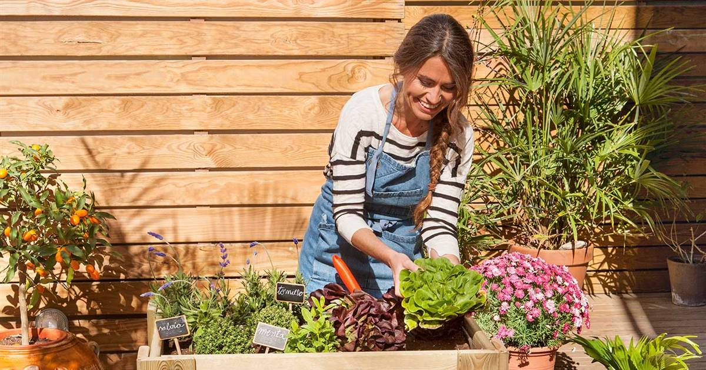

"Quédate en casa". Esta definitivamente es una frase que hemos
escuchado mucho durante el último año, suena sencilla hasta que nuestra
casa se convierte en nuestra oficina, salón de clases, gimnasio, cine y
toda nuestra vida se desarrolla en un mismo lugar. Es por esto que los
índices de ansiedad, depresión, estrés, incertidumbre y muchos otros
sentimientos negativos se han visto más presentes en la vida de todos.
Al darme cuenta de lo anterior decidí compartir todas las cosas que me han
ayudado a sobrellevar estos momentos difíciles.
Estos son los puntos que trataré:
Establece un horario
El establecer un horario te ayudará a tener más orden en tu día y te mantendrá
ocupado por lo que evitará que te enfoques en lo negativo.
Aquí te dejo una sugerencia, puedes adaptarlo como más te guste.
| Horas | Actividades |
|---|---|
| 7:30 | Despertar |
| 7:50 | Desayunar |
| 8:30 | Vestirse y arreglarse |
| 9:00 | Trabajo o Escuela |
| 11:30 | Descanso y Snack |
| 12:00 | Limpieza sencilla |
| 1:30 | Comida |
| 2:30 | Terminar pendientes |
| 4:00 | Ejercicio |
| 5:20 | Baño |
| 5:40 | Tiempo libre |
| 9:30 | Cena |
Mantente activo
Está comprobado que la actividad física ayuda a reducir los niveles
de estrés, a mejorar la calidad del sueño e incluso puede mejorar
nuestro estado de ánimo
En esta página puedes encontrar programas de ejercicios completos,
gratuitos y que además no requieren equipo.
Empieza un diario de gratitud
Uno de mis descubrimientos favoritos durante la cuarentena fue el diario de gratitud ,concentrar nuestra atención en lo positivo tiene múltiples beneficios tanto en nuestra salud física como mental. Hay muchas maneras de hacer un diario de gratitud, pero el objetivo es simple: todos los días tienes que anotar algo por lo que estes agradecido.
Aquí te comparto un increíble video que nos explica el enorme impacto que puede tener un diario de gratitud en nuestras vidas.
Mantén contacto con tu familia y amigos
Hay muchas maneras en las que puedes divertirte y platicar con tus amigos y familia a distancia.
Puedes relizar videollamadas por Zoom o por Google Meet ambas son excelentes plataformas.
Otra idea para convivir a distancia pueden ser los juegos online, estos son algunos de los que más me han gustado y que recomiendo mucho:
Medita
Meditar contribuye a mejorar la salud mental, Lojong es una excelente aplicación para hacerlo, esta app ofrece distintos programas de meditación guiada, son programas muy sencillos por lo que es ideal si eres principiante.

Comienza un nuevo hobbie
Hay un sinfín de actividades que puedes iniciar como:
Cocina
Canto
Jardinería

Lee libros
Personalmente leer me ha ayudado mucho a afrontar la cuarentena, además de que es un excelente hábito con beneficios para la memoria y el cerebro.
No hay problema si no tienes libros físicos puedes optar por digitales.
Aquí te dejo alugnas de mis lecturas duarante cuarentena, algunos de estos libros están en domino público por lo que también dejaré un enlace dónde puedes descargarlos:
- El retrato de Dorian Gray
- Oscar Wilde
- El guardián entre el centeno
- J. D. Salinger
- El baile de las luciérnagas
- Kristin Hannah
- El Ruiseñor
- Kristin Hannah
- El escarabajo de oro
- Edgar Allan Poe
Tómalo con calma
Por último quiero decirte que está bien sentir ansiedad, estrés o depresión, lo importante es
cómo lo enfrentamos, acá dejaré un video que puede ayudarte con eso.
También esta bien tener días de descanso; nadie estaba preparado para lo que esta pasando y todos lo afrontamos de maneras diferentes, por eso te aconsejo que busques lo que a ti te haga sentir mejor, aprovecha este tiempo para conocerte y prestar más atención a cosas importantes, no te presiones para hacer cosas solo porque ves que todo el mundo está siendo super productivo, busca tu bienestar y tu paz. Espero que mis recomendaciones te sean útiles.